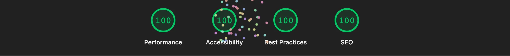

Audit Lighthouse de la page d'accueil sur staging.giggr.be, avec les deux profils : desktop et mobile (mobile bridé en 4G lente, c'est le plus sévère). Quatre catégories sont notées sur 100.
| Catégorie | Desktop | Mobile | Cible |
|---|---|---|---|
| Performance | 100 | 86 | ≥ 95 |
| Accessibilité | 100 | 100 | ≥ 95 |
| Bonnes pratiques | 100 | 100 | ≥ 95 |
| SEO | 100 | 100 | ≥ 90 |

Accessibilité, bonnes pratiques et SEO sont à 100 sur les deux profils, et la performance desktop est parfaite. Côté mobile, la performance atteint 86, avec un Speed Index de 1,6 s et un temps de blocage nul. Il subsiste un décalage de mise en page résiduel (CLS 0,141, encore au-dessus du seuil), à investiguer.
Les métriques de chargement mesurées par Lighthouse, desktop et mobile, face aux seuils recommandés. Un audit GTmetrix externe peut compléter ce relevé sur un poste distant.
| Métrique | Desktop | Mobile | Seuil |
|---|---|---|---|
| First Contentful Paint | 0,3 s | 1,3 s | < 1,8 s |
| Largest Contentful Paint | 0,6 s | 3,4 s | < 2,5 s |
| Total Blocking Time | 0 ms | 0 ms | < 200 ms |
| Cumulative Layout Shift | 0,001 | 0,141 | < 0,1 |
| Speed Index | 0,5 s | 1,6 s | < 3,4 s |
Le temps de blocage est nul (aucun JavaScript long) et le Speed Index est désormais bon sur les deux profils. Restent hors seuil, côté mobile uniquement, le LCP (3,4 s) et le CLS résiduel (0,141), liés au chargement et à la stabilité des visuels au-dessus de la ligne de flottaison.
Ratios de contraste de la palette de Giggr au regard de
WCAG AA : au moins 4.5:1
pour le texte courant et 3:1 pour le
grand texte. L'audit Lighthouse, qui inclut le contraste, place
l'accessibilité à 100 ; le détail des couples utilisés est ci-dessous.
| Couple (premier plan sur fond) | Ratio | Niveau |
|---|---|---|
| Titres sur fond clair | 12,97:1 | AA |
| Texte courant sur fond clair | 10,23:1 | AA |
| Texte secondaire sur fond clair | 6,30:1 | AA |
| Légendes sur fond clair | 5,02:1 | AA |
| Accent (terracotta) sur fond clair | 4,88:1 | AA |
| Texte sur fond foncé | 10,23:1 | AA |
| Légendes sur fond foncé | 4,73:1 | AA |
| Accent (corail) sur fond foncé | 3,93:1 | AA grand texte |
| Texte indicatif (placeholder) sur fond clair | 2,86:1 | sous le seuil |
L'ensemble des textes porteurs d'information passe AA. Deux couples sont à surveiller : l'accent corail sur fond foncé, réservé au grand texte, et le texte indicatif des champs (placeholder), sous le seuil mais non porteur d'information essentielle.